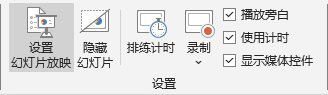
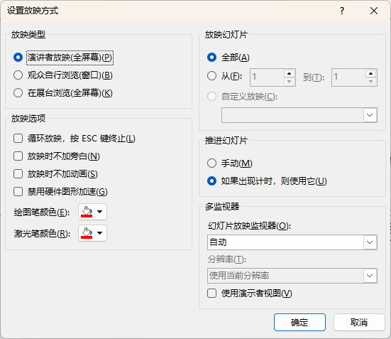
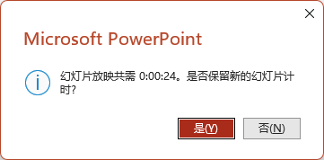
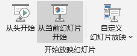
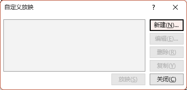
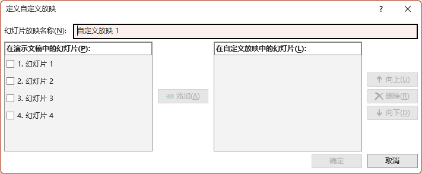

放映
Slide Show
设置 Setup

设置幻灯片放映
- 设置幻灯片放映 Setup Slide Show
- 设置幻灯片的播放方式，如是否循环等
- 也可以通过自定义方式放映指定的幻灯片（见后续内容）

放映设置
1. 演讲者放映 (全屏幕)
- 最常用、最标准的演示模式，专为有演讲者现场控制的场合设计
- 控制权：演讲者通过鼠标、键盘或遥控器控制幻灯片的播放、暂停和翻页
- 显示界面：以全屏方式独占显示，隐藏所有编辑界面和菜单栏
- 典型应用：会议汇报、课堂教学、产品发布会等需要演讲者实时掌控节奏的正式场合
2. 观众自行浏览 (窗口)
- 将演示文稿作为一个可交互的窗口，适合观众自主探索
- 控制权：观众可以通过窗口内的滚动条、导航按钮或菜单命令自行控制播放进度，可以自由翻页、打印或浏览
- 显示界面：演示文稿在一个可调整大小的窗口中播放，窗口会保留菜单栏等操作命令
- 典型应用：资料查阅、自助学习、非正式的展示等，观众需要自行控制观看节奏的场景
3. 在展台浏览 (全屏幕)
- 无人值守的自动播放模式，常用于循环展示
- 控制权：系统自动播放，通常按照预设的排练时间切换幻灯片。除了鼠标光标可用于选择超链接外，其他交互功能（如右键菜单）会被禁用，放映结束后会自动循环
- 显示界面：同样是全屏显示，但功能受限，防止观众误操作
- 典型应用：展会宣传、商场广告、信息亭等无人值守、需要自动循环播放的场合
- 排练计时 Rehearsal Timing
- 排练计时会开启幻灯片的自动播放
- 在排练过程中，设置每张PPT的放映时间，根据内容多少或重要程度确定讲述的时间
- 每张幻灯片的放映时间，更新到幻灯片自动切换的设置里
- PPT放映时，将按照设置的时间自动放映，比自动换片更加精准
- 取消排练计时，只需要取消自动播放即可

排练计时
- 录制 Record
- PPT放映时，录制整个过程，包括画面，音频和视频
- 各种演进比赛都用到
- 更多录制控制，可访问 录制 选项卡
自定义放映

自定义放映
- 默认情况下，幻灯片按照顺序播放
- 可以通过"自定义放映"指定播放顺序
- 先定义再使用
创建自定义放映
- 单击"自定义放映"，打开"自定义放映"对话框

"自定义放映"对话框
- 单击"新建"，打开"定义自定义放映"对话框

"定义自定义放映"对话框
- 输入幻灯片放映名称
- 在对话框左侧选择幻灯片，单击"添加"，添加到对话框右侧
- 重复选择及添加
- 对话框右侧可以删除或调整幻灯片的顺序
- 定义完毕后，单击"确定"，关闭"定义自定义放映"对话框
- 单击"关闭"，关闭"自定义放映"对话框
- 在"设置幻灯片放映"的对话框，可以选择自定义的放映